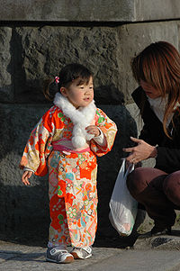
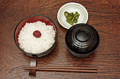
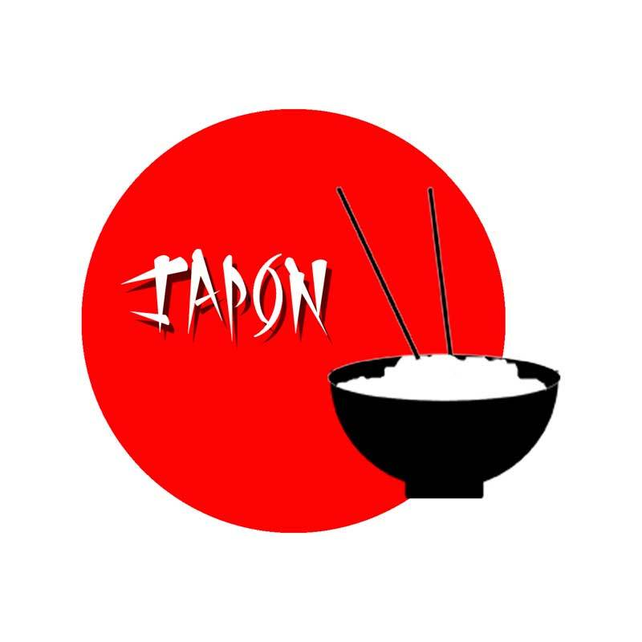
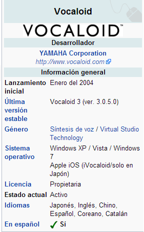
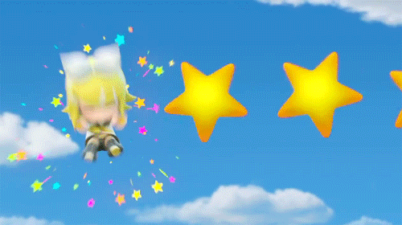
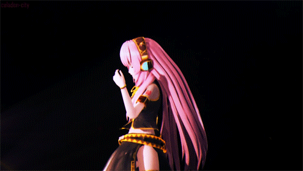
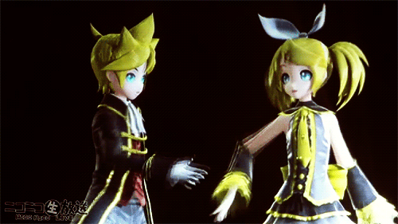
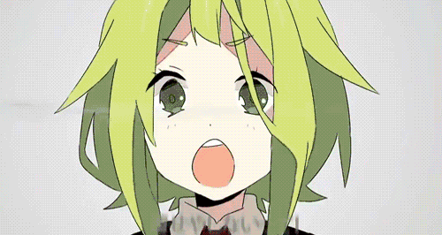
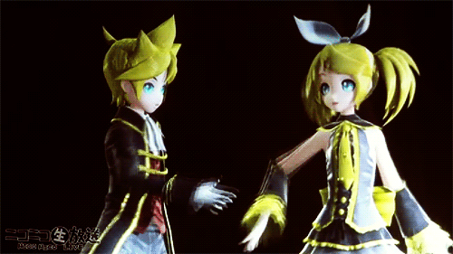
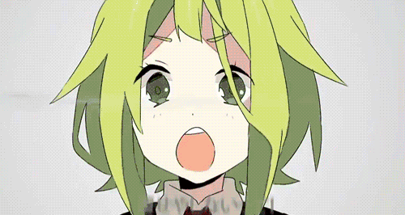

La cultura de Japón es el resultado de un proceso histórico que comienza con las olas inmigratorias originarias del continente de Asia y de las islas del Océano Pacífico, seguido por una fuerte influencia cultural proveniente de China y, posteriormente, un largo período de aislamiento con el resto del mundo (sakoku) de parte del shogunato Tokugawa hasta el comienzo de la Era Meiji, a finales del siglo XIX, en donde recibe una inmensa influencia extranjera y que se acrecienta después del final de la Segunda Guerra Mundial. Esto dio como resultado una cultura distinta a otras culturas asiáticas.
En Japón, las interrelaciones personales están muy influenciadas por las ideas de "honor","obligación" y "deber", conjunto conocido como giri (???), y que representa una costumbre diferente a la cultura individualista y liberal de los países occidentales. Las concepciones de "moralidad" y "conductas deseables" son menos practicadas en situaciones familiares, escolares y de amistad. Sin embargo, se observa una práctica más formal frente a superiores o gente desconocida.
Un aspecto que ha tenido un rol significante en la cultura japonesa es el idioma japonés. También se practica el nemawashi (????), que se refiere a la preparación cuidadosa y seria de un proyecto, que refleja la armonía aceptada y respetada dentro de la cultura japonesa.
Por otro lado, los japoneses poseen un sentido del humor intrincado y complicado, que se refleja mucho en el idioma, la cultura, la religión y la ética, y que a veces es considerado como muy difícil de interpretar por otras culturas.
Vestimenta
En Japón se pueden encontrar dos tipos de vestimenta: la tradicional y la moderna. En el vestuario tradicional se destaca el kimono (??? literalmente "cosa para vestir") , que es una prenda llamativa larga usada por mujeres, hombres y niños en ocasiones especiales, la cual consta de un fondo, un forro y la parte llamativa superior. También las mangas del kimono diferencian a las mujeres casadas de las solteras. El kimono ya casi no se utiliza por su dificultad de uso, incluso en la antigüedad había gente que se dedicaba a vestir a las personas con kimonos. Otras prendas usadas por los japoneses son: la yukata (???), que es un kimono ligero de verano; la hakama (??), una prenda ceremonial; el jinbei (???, ???), prenda masculina ligera usada como pijama; y el junihitoe (????), una prenda femenina similar a un kimono y usada por las nobles.
Entre las correas y fajas tradicionales, están el obi (??), que se usa junto con el kimono, la hakama y la yukata. En cuanto a los calzados tradicionales, están: el tabi (???) y el jika-tabi (?????), que son las medias tradicionales; el zori (???), que son usados como sandalias; el geta (???), una especie de zueco; y el waraji (???), que es una sandalia usada por los monjes budistas.

Con respecto al vestuario moderno japonés, existen algunas tendencias como el ganguro (?????), que es una moda femenina caracterizada por usar ropa de diseñadores, tener la piel bronceada y adoptar el uso excesivo de accesorios. Otra moda moderna en Japón es la moda lolita (????·?????? rorita fasshon?), que está inspirado en la moda victoriana infantil con elementos del Rococó y que ha tenido derivaciones de las subculturas gótica, punk, meido, etc. Curiosamente, el uniforme escolar japonés se ha tomado como una variante especial del vestuario juvenil, que se encuentra muy plasmado en los medios de comunicación japoneses. Otra forma de moda moderna que se inició en Japón es el cosplay (???? kosupure?), que consiste en disfrazarse de algún personaje que aparezca en algún medio de comunicación japonés: anime, manga, videojuegos, vídeos musicales, etc.
Gastronomía
La gastronomía japonesa posee un largo pasado culinario que se ha desarrollado en una gastronomía sofisticada, refinada y especializada para cada estación. Es similar a la gastronomía china con respecto a los alimentos básicos o shushoku (???), que están basados en cinco alimentos ricos en carbohidratos (??: ?, ?, ?, ?, ? o ?): arroz, trigo y avena (plantas del género Setaria), y frijol y mijo común (plantas del género Echinocloa). Los platos, conocidos como okazu (????), tienen la función de dar sabor a la comida principal, y por lo general son salados.

Una comida japonesa estándar siempre consiste de una taza de arroz japonés (gohan) como shushoku, y de acompañamiento tsukemono (encurtido), que es una taza de sopa y una variedad de platos okazu como pescado, carne, vegetales, etc. También se tiene como costumbre nombrar las comidas dependiendo de la cantidad de okazu que acompañan al arroz y a la sopa. La más sencilla es la ichiju-issai (????? "una sopa, un plato"), pero la comida tradicional es la ichiju-sansai (????? "una sopa, tres platos"), donde cada plato se realiza con una técnica de cocinado diferente. También cabe destacar que, como Japón es una isla-nación, se consume mucho marisco.
Entre los shushoku más usados están: el arroz japonés (gohanmono); el congee (??), que es gacha de arroz japonés; el donburi (??), que es arroz con carne o vegetales juntos en una misma taza; y el popular sushi (???), que es arroz cocido acompañado con pescado, carne o vegetales. Otros alimentos principales son los fideos japoneses tales como el soba (???), el udon (????) y el ramen (?????), entre otros. Un último componente que es shushaku es el pan japonés, sobre todo el pan de curry (????? kare pan?) y el anpan (?????), que es un pan dulce relleno con pasta de frijol rojo.
En cambio, los okazu más conocidos son: el agemono, que son alimentos fritos como el korokke (?????), el tempura (?????), el tonkatsu (????), etc.; el yakimono, alimentos con pan frito o en parrilla, como el okonomiyaki (??????), el teriyaki (?????), el takoyaki (?????), el yakitori (????), etc.; el nabemono, alimentos servidos "al vapor", como el sukiyaki (?????), el oden (????), etc.; el nimono, que son estofados como el nikujaga (?????), el soki (????), etc.; y el itamemono, que son comidas revueltas como el chanpuru (???????), etc.

El sashimi (???), que es marisco cortado en rodajas, también es considerado un okazu. Otros platos okazu son: los suimono y shirumono, que son sopas como la sopa de miso (??? misoshiru?), el zoni (???), etc.; las picadas y comidas saladas como el (tsukemono (???), los encurtidos, el ikura (???? , hueva de salmón), etc.; el natto (???), soya fermentada; y el chinmi, comidas regionales.
Acompañando al okazu existen otros elementos dentro de la gastronomía japonesa. Los dulces y aperitivos más conocidos son los wagashi (????), que son aperitivos tradicionales. Entre ellos están: el anmitsu (?????), el postre más conocido del país; el kakigori (????), hielo saborizado bien picado; el kompeito (????), un confite japonés; y el pan de melón (??????), entre otros. Otros dulces son los dagashi, que son alimentos de antaño, y los yogashi, dulces de origen occidental tales como el castella (?????), que es un dulce esponjoso traído por los portugueses.
En cuanto a las bebidas tradicionales, el té verde tiene predominio en las bebidas no alcohólicas, aunque existen otras bebidas como el ramune (????) o el calpis (?????). Con respecto a las bebidas alcohólicas, se destacan el sake (??), el shochu (???), el awamori (???) y el umeshu (???).
ANIME
La palabra anime (????) fue tomada en Japón para nombrar a un estilo de animación, surgido en ese país. Es el término que identifica a la animación de procedencia japonesa. Su origen es discutido, se cree que el término anime proviene de la abreviación de la transcripción japonesa de la palabra inglesa "animation" (??????? animeshon). De ahí que se abrevie a "anime". Por otra parte se cree que es una palabra de origen francés. El anime es un medio de gran expansión en Japón, siendo al mismo tiempo un producto de entretenimiento comercial y cultural, lo que ha ocasionado un fenómeno cultural en masas populares y una forma de arte tecnológico.1 Es potencialmente dirigido a todos los públicos, desde niños, adolescentes, adultos, hasta especializaciones de clasificación esencialmente tomada de la existente para el "manga" (historieta japonesa), con clases base diseñadas para especificaciones socio-demográficos tales como empleados, amas de casa, estudiantes, etc. Por lo tanto, pueden hacer frente a los sujetos, temas y géneros tan diversos como el amor, aventura, ciencia ficción, cuentos infantiles, literatura, deportes, fantasía, erotismo y muchos otros.
El anime tradicionalmente es dibujado a mano, pero actualmente se ha vuelto común la animación en computadora. Sus guiones incluyen gran parte de los géneros de ficción y son transmitidos a través de medios cinematográficos (transmisión por televisión, distribución en formatos de video doméstico y películas con audio).[cita requerida] La relación del anime japonés con el manga es estrecha, pues históricamente una gran cantidad de series y trabajos de anime se basan en historias de manga populares. Además, también guarda estrecha relación con las novelas visuales.
Entre los rasgos características de los personajes de anime encontramos el tamaño de los ojos, sus finas narices y bocas, su muy particular cabello y sus cuerpos así como la expresividad de los personajes y el hecho de tener un actitud definida que los hace casi reales a otro contexto.
Etimología
La ideología más fuerte es que el término anime proviene de la abreviación de la transcripción japonesa de la palabra inglesa "animation" (??????? animeshon?). De ahí que se abrevie a "anime".
Internacionalmente, el anime llevó una vez el nombre popular "Japanimation", pero este término ha caído en desuso. Los fanáticos pronunciaban la palabra preferiblemente como abreviación de la frase "Japanese Animation" ('animación japonesa' en español). Vio su mayor uso durante las décadas de 1970 y 1980,[cita requerida] que generalmente comprende la primera y segunda oleada de anime fandom. El término sobrevivió al menos hasta principios de los años 1990, pero pareció desaparecer justo antes del resurgir del anime a mediados de los 1990[cita requerida]. En Estados Unidos también se definió anime como cartoon japanese, que significa dibujos animados japoneses; pero no generó gran impacto y su utilización fue mínima.
En general, el término "Japanimation" ahora sólo aparece en contextos nostálgicos en el mundo occidental, sin embargo el término es muy utilizado en Japón para distinguir las animaciones hechas allí (Japanimation) de las animaciones en general (Anime, en Japón).
VOCALOID


Vocaloid (?????? Bokaroido?) es una aplicación software de síntesis de voz, capaz de cantar, desarrollado por Yamaha Corporation, en colaboración con el Music Technology Group de la Universidad Pompeu Fabra de Barcelona, España. El equipo de investigadores encargado del desarrollo de la tecnología de Vocaloid es el mismo que a finales del 2011 fundó Voctro Labs, la primera empresa que comercializa voces hispanas para Vocaloid3. Yamaha Corporation puso los medios económicos para llevar a cabo el proyecto y después desarrolló el software en un producto comercial llamado "Vocaloid".1 2 El software proporciona al usuario la capacidad de sintetizar canciones simplemente escribiendo la letra y la melodía. Usa tecnología de sintetizado el cual se graba el canto de actores de doblaje o cantantes. Para crear una canción, el usuario debe incorporar la melodía y las letras. Una interfaz de un rollo de piano es usado para incorporar la melodía y las letras que pueden ser puestas en cada nota.

El Software puede cambiar el acento de las pronunciaciones, agregar efectos tales como el vibrato o el cambio de dinámica y el tono de la voz. Cada Vocaloid es vendido como "una cantante en una caja" diseñado a actuar como un reemplazo para un cantante real. Inicialmente el software contaba sólo con los idiomas Inglés y Japonés, pero a partir de la versión 3 se incorporan Español, Chino y Coreano.
.gif)
El Software está dirigido tanto a músicos profesionales como a usuarios que lo usan como hobby, y hasta ahora, ha vendido la idea de que los límites los marca las habilidades del propio usuario.3 Grupos musicales japoneses como Livetune de Victor Entertainment y Supercell de Sony Music Entertainment Japan han liberado sus propias canciones con Vocaloid como su vocal. La marca disquera japonesa Exit Tunes of Quake Inc., también ha liberado compilaciones de álbumes con Vocaloids.4 5 Artistas tales como Mike Oldfield también han usado Vocaloids dentro de su trabajo para respaldar la voz del cantante y muestras de sonido.6
 




 Minamoto no Yoritomo asumió en 1192 el liderazgo de Japón, instaurando la figura del shogunato como una institución militar permanente que gobernaría de facto durante casi 700 años. El estallido de la Guerra Onin en 1467 provocó una cadena de guerras que se extendieron por Japón, periodo que culminó en 1573, cuando Oda Nobunaga comenzó a unificar el país, pero no pudo terminar la tarea debido a que fue traicionado por uno de sus principales generales. Toyotomi Hideyoshi vengó su muerte y culminó la unificación en 1590. A su muerte, el país volvió a dividirse en dos bandos, los que apoyaban a su hijo Hideyori y los que apoyaban a uno de los daimyo principales, Tokugawa Ieyasu. Ambos bandos se enfrentaron durante la batalla de Sekigahara, de la cual Ieyasu salió con la victoria, siendo nombrado oficialmente shogun en 1603, instaurando el shogunato Tokugawa. El período Edo se caracterizó por ser pacífico, y por la decisión de cerrar las fronteras para evitar el contacto con el exterior. El aislamiento terminó en 1853 cuando el Comodoro Matthew Perry obligó a Japón a abrir sus puertas y firmar una serie de tratados con las potencias extranjeras (llamados «Tratados Desiguales»), lo que ocasionó malestar entre algunos samuráis, quienes apoyaron al emperador para que retomara su protagonismo en la política.
Minamoto no Yoritomo asumió en 1192 el liderazgo de Japón, instaurando la figura del shogunato como una institución militar permanente que gobernaría de facto durante casi 700 años. El estallido de la Guerra Onin en 1467 provocó una cadena de guerras que se extendieron por Japón, periodo que culminó en 1573, cuando Oda Nobunaga comenzó a unificar el país, pero no pudo terminar la tarea debido a que fue traicionado por uno de sus principales generales. Toyotomi Hideyoshi vengó su muerte y culminó la unificación en 1590. A su muerte, el país volvió a dividirse en dos bandos, los que apoyaban a su hijo Hideyori y los que apoyaban a uno de los daimyo principales, Tokugawa Ieyasu. Ambos bandos se enfrentaron durante la batalla de Sekigahara, de la cual Ieyasu salió con la victoria, siendo nombrado oficialmente shogun en 1603, instaurando el shogunato Tokugawa. El período Edo se caracterizó por ser pacífico, y por la decisión de cerrar las fronteras para evitar el contacto con el exterior. El aislamiento terminó en 1853 cuando el Comodoro Matthew Perry obligó a Japón a abrir sus puertas y firmar una serie de tratados con las potencias extranjeras (llamados «Tratados Desiguales»), lo que ocasionó malestar entre algunos samuráis, quienes apoyaron al emperador para que retomara su protagonismo en la política.
.png)
.png)